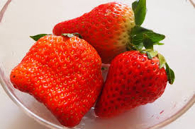

<p>いちご</p>

<a href="https://yuzugosho.main.jp/archives/2141?utm_source=rss&utm_medium=rss&utm_campaign=%25e3%2581%2584%25e3%2581%25a1%25e3%2581%2594-%25ef%25bc%258f-%25e3%2582%2586%25e3%2581%259a%25e3%2583%2595%25e3%2582%25a9%25e3%2583%2588-cc-by-%25e3%2583%2595%25e3%2583%25aa%25e3%2583%25bc%25e7%25b4%25a0%25e6%259d%2590%25e5%2586%2599%25e7%259c%259f%25e9%2585%258d%25e5%25b8%2583">いちご</a> © 2022 by <a href="https://yuzugosho.main.jp/archives/author/yuzugosho">ゆずごしょう / Yuzugosho</a> is licensed under <a href="https://creativecommons.org/licenses/by/4.0/">CC BY 4.0</a>